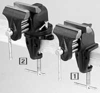
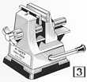
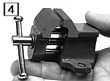
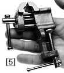

|



 |
|
Bench Vises |
|
(1) BENCH
VISE -
Economical and sturdily constructed bench vise with twin guide
rods to assure parallel closing and rigidity. Jaws are smooth to
prevent marring soft metals. Bodies are enameled. Fits benches up
to 2" thick. |
|
|
Jaw |
Jaw |
|
|
|
No. |
Width |
Open |
ShpWt |
Each |
|
58.101 |
2 1/2" |
2 1/2" |
4 Ibs |
28.50 |
|
(2) SWIVEL
BENCH VISE -
Swivel base permits vise to be locked into position in any
direction. Twin guide rods to assure parallel operation and
rigidity. Smooth jaws do not mar soft metals. Anvil on top. Jaws
are 2 1/2" wide, open to 2 1/2" Fits benches up to
2" thick. |
|
58.104 |
ShpWt 5 Ibs. 6 oz |
$41.00
|
|
(3) XACTO
MINI VAC VISE No
screws. Lever-operated suction cup holds tightly on nonporous
smooth surfaces such as glass, metal or laminated surfaces.
Maximum opening : 1 1/4". |
|
58.110 |
ShpWt 8 oz |
$9.50
|
|
(4) MINI
BENCH VISE -
A mini vise that can be permanently attached to a bench or table.
Made of a heavy cast iron and coated with a heavy red enamel for
better durability. |
|
58.051 |
Jaw 1" |
ShpWt 11 oz. |
$6.65 |
|
(5) MINI
VISE - This uniquely
small clamp style vise has a one inch jaw for smaller precision
work. Made of a heavy cast iron for better durability with a heavy
red enamel coating. |
|
58.050 |
ShpWt 13 oz. |
$7.40
|
|
|
Hand Vises and
Clamps |
|
(6) STEEL
HAND VISE - has spring
action in handle to keep jaws open. Jaws are 11/2" wide, and
open to 7/16". The insides of the jaws are serrated. Overall
length is 3 3/4". |
|
58.120 |
ShpWt 12 oz |
$19.00 |
|
(7) WOOD HANDLED
HAND VISE -
A lightweight vise mounted on wood handle. Jaws are smooth, and
are 1h" wide and open to 1". Overall length is 6
1/4".
|
|
58.130 |
ShpWt 7 oz |
$9.25 |
|
(8) WING NUT
HAND VISE - have
serrated, grooved, spring action jaws, which open and close by
large wing nut. Handle is hollow to allow long wire to pass
through. Jaws open to 1/4". Overall length 4 1/2". Jaw
width 1/4".
|
|
58.140 |
ShpWt 2 oz |
$25.00 |
|
(9) C
CLAMPS -
have swivel no-mar buttons. Frames are made of heat treated
malleable iron and are nickel plated.
|
|
No. |
Opening |
Depth |
ShpWt |
Each |
|
58.151 |
1" |
3/4" |
2 oz |
$2.50 |
|
58.152 |
2" |
1" |
3 oz |
3.00 |
|
Pin Vises |
|
(10)
SWIVEL HEAD PIN VISE -
Has large free wheeling head, which makes it suitable for
drilling, tapping, as a screwdriver, etc. Comes with two double
ended collets, one in screw chuck, and the other is stored in the
handle. Capacity 0 to .125", overall length 3 1/2" |
|
58.22 |
ShpWt 2 oz |
$6.00
|
|